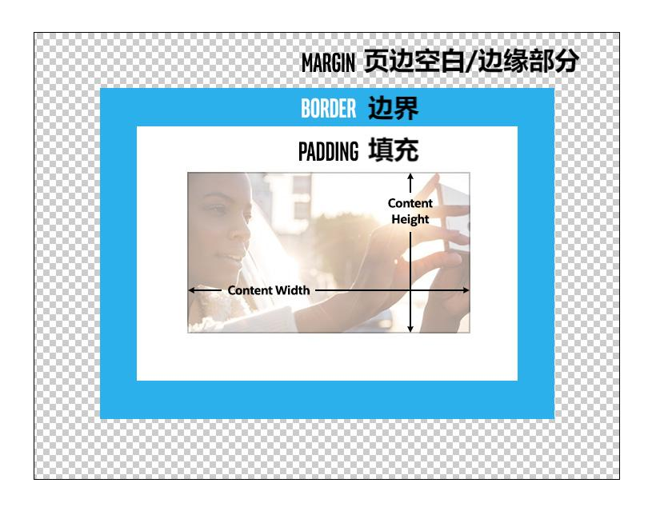
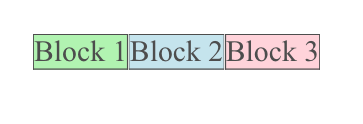
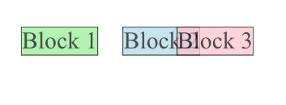
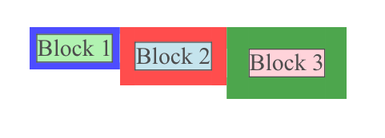
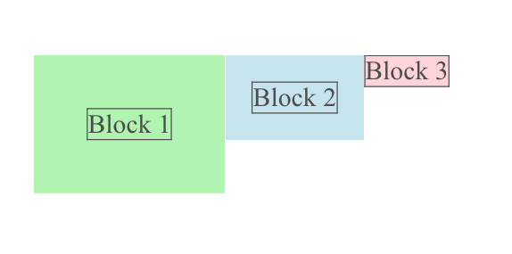
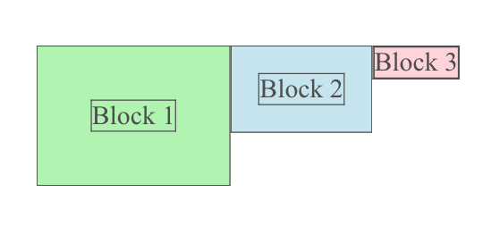
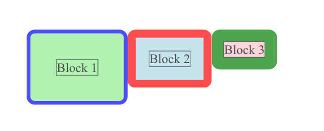

4.3.1 CSS盒模型
在我们深入调试之前，更深入地了解CSS的几个方面是很有帮助的。
网页上元素的放置可能相当复杂。CSS框模型是影响Web页面上内容去向的最基本特性之一。长方体模型控制CSS的3个重要间距特性。我们之前了解到边距是元素之间的空间。还有两个类似的概念，填充和边框。
也许最好的理解方式是通过图片：
html文档中的所有元素最终都被视为窗口中某个地方的矩形。每个矩形的内容对应于下图中最内侧的矩形。内容的外部是填充。这有点像一个内部边距，意味着它将内容与边框分隔开。边框基本上跟踪填充矩形的边。
需要注意的是，边框围绕内容和填充。有时与元素相关联的可见事物在技术上不属于元素内容的一部分。其中一个示例是列表项：
- 我在一个蓝色的盒子里
框中不包含项目符号，因为它位于内容之外。有时，当您看到它可能有点令人困惑时，尤其是因为它也会影响填充（在边框内）。
- padding-left: 1rem;(左侧填充：1rem；)
有一个列表样式选项“列表样式位置”，可用于将项目符号作为内容的一部分包括在内：
- list-style-position: inside; padding-left: 1rem;(列表样式位置：内部；左侧填充：1rem；)
现在，项目符号位于边框内，填充会影响项目符号和文本。
border属性的选项比padding或margin多得多。想象一下，使用钢笔绘制矩形的边。您可以选择笔的厚度，以及绘制实线还是虚线。你甚至可以选择转弯的方式，无论是急转弯还是更平缓的圆形。所有这些特性都可以由CSS属性控制，如边框宽度、边框样式和边框半径。
虽然所有这些边框属性都有默认值，但在指定边框时，有三个最常见的属性：边框宽度（假想笔的大小）、边框样式（虚线、虚线、实线等）和边框颜色（笔的颜色）。事实上，这些都是如此常见的指定，以至于有一种速记语法可以将所有三个设置在一行中：
border: 5px solid blue;
还有很多其他的捷径可以学习，但这一条很常见。要绘制边框，您需要知道边框的宽度、样式和颜色。这些值有默认值，因此从技术上讲，您不需要指定所有这些值，但这是所需的最少信息，而且非常常见。
正如我们前面所了解的，边距指定元素相对于相邻元素的位置，可以是右侧或左侧，也可以是顶部或底部。边距始终是透明的，并且可以单独设置每一侧。边距的独特之处在于，任何边的值都可以是负数，即使这意味着它与页面上的另一个元素重叠。当您想要控制元素在页面上的位置时，这会很有用。
在以下图片中，黑色矩形包含内容：
 在左边，我们看到三个块之间没有边距。右侧是相同的3个块，但现在块2的左边距为正，在块1和块2之间创建了空间。块3的左边距为负，导致其左侧与块2重叠。
边界可能更容易理解，因为它通常是可见的，尽管它不一定是可见的。与边距（或填充）不同，有更多选项可以控制边框的大小、形状、颜色和样式。您甚至可以创建完全或部分透明的边框，也可以将边框的颜色与背景的颜色相匹配，基本上使其不可见。但它仍然存在，占用了页面上的一些空间，并影响了浏览器中显示的元素的位置。边框的宽度控制其大小（厚度），因此只有接受大于或等于0的数字才有意义。如果边框宽度小于0，浏览器的操作是未定义的，不应依赖于此。
上面，块1、2和3都有宽度不同的边框，但边距为零。没有重叠，无论其宽度如何，边界都是相对的。内容有不同的位置，受边框宽度的影响。如果我们要使边框不可见（完全透明），那么内容的位置将是相同的。
边框内是填充物。这将控制元素内容和边框框之间的空间量（无论是否可见）。如果没有填充，那么元素的内容（可能是文本或图像）将正好对着边框，如果有可见的边框，这可能会很尴尬。
与边缘和边界一样，所有四个边都可以独立设置。填充区域的背景与元素的背景匹配，因此元素的有效可见大小包括填充。
在这里，我们在内容周围有一个很薄的边框，用来描述内容结束和填充开始的位置。同样，内容受填充宽度的影响，但现在填充的背景与内容的背景相同。这使它看起来更像是内容被扩展了。
如果我们给这些添加一个薄边框，我们会看到内容和边框之间的空白反映了填充。
所有这些都可以具有0的宽度，这相当于没有它们，因此“边距：0；”与“边距：无；”相同。每个都可以用相对或绝对长度单独控制。虽然填充和边框需要非负宽度，但边距可以是正宽度，也可以是负宽度。
结合使用这三种设置可以在间距和绘制边框方面提供相当大的灵活性。如果有填充和可见边框，则可以控制边框与内容的距离。通过设置边距，可以控制边界与周围图元的距离。
甚至可以使用“边界半径”（border radius）设置提供边界圆角：
